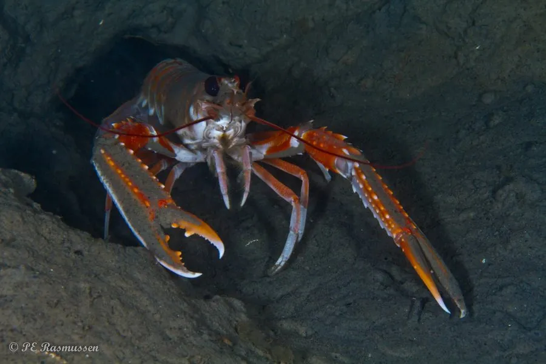

甲壳动物 · 动物界
挪威海螯虾 Nephrops norvegicus

生活在泥质海底的小型龙虾，螯足细长，被称为挪威龙虾，是欧洲重要的渔业资源，常以尾部肉出售。
- 分类
- 门节肢动物门纲软甲纲目十足目科海螯虾科属海螯虾属
- 栖息环境
- 东北大西洋和地中海的泥质海底，自行挖洞栖息
- 地理分布
- 东北大西洋、北海和地中海，从冰岛到摩洛哥
- 保护级别
- 暂无评估；渔业受配额管理
物种志
挪威海螯虾体长约 10–25 cm，外形像小型龙虾，体色橙红至浅粉，螯足细长，第一对步足上有细小的螯，头胸甲有明显的额剑和眼。
它生活在东北大西洋和地中海 20–800 m 深的泥质海底，自己挖掘洞穴，白天躲在洞里，夜间出来觅食，以蠕虫、贝类、甲壳类和腐肉为食。挪威海螯虾的捕捞是欧洲重要的渔业之一，主要用拖网和笼具，捕捞后多加工成去壳虾尾出口。种群受捕捞强度、海洋温度和底质环境的影响，欧盟通过配额和最小可捕尺寸进行管理；研究还发现其种群周期与海洋环境变化有关。它的生长速度较慢，性成熟需要数年，因此捕捞管理必须谨慎。
形态与习性
- 食性取食蠕虫、贝类、甲壳类和腐肉
- 体长约 10–25 cm
- 栖息泥质海底挖洞穴居，白天躲藏、夜间活动
- 分布东北大西洋、北海和地中海
- 渔业欧洲重要渔业资源，多以尾部肉出售
- 管理欧盟配额和最小可捕尺寸管理
趣味知识
- 挪威海螯虾的螯足非常细长，和普通龙虾很不一样。
- 它在泥底挖洞居住，白天躲进洞里，夜里才出来觅食。
- 市场上常见的去壳龙虾尾，很多就是挪威海螯虾的尾部肉。